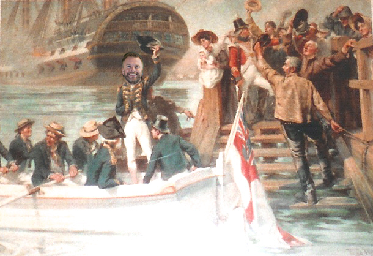
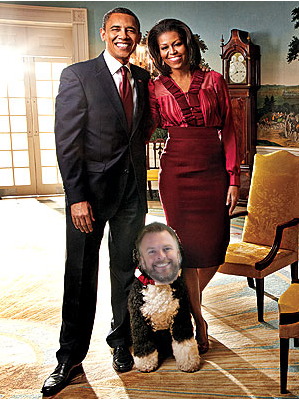
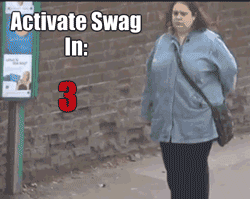

@kylehqcom
Code is my Mistress
For the love of dumb
Part 1.0
Code is my Mattress
For the love of dumb
Part 1.0
Who am i?
Who am i?
Who am i?
Who am i?
Who am i?
Who am i?
Who am i?

Disclaimer
The beginning
Love is?
Honesty
Respect
Nakedness
Shuut @ Code
Typical Day
Zen Master
Consistent
Repeatable
Abstracted
Programming
C.R.A.P
Wha???

#1
I am Dumb
And the people I respect most are too.
You are?

Stupid
Someone who has to look up "stupid" in the dictionary because they don't know what it means.
http://www.urbandictionary.com/define.php?term=stupidDumb
Muteness, the condition of being unwilling or unable to speak
http://en.wikipedia.org/wiki/DumbUnwilling to speak
Unwilling to speak
Unwilling to speak
Listening
Not this Listening

What are you listening for?

What are you listening for?
What are you listening for?

What are you listening for?
What are you listening for?
Overload
Overload

Overload
What now?
What now?
What now?
Change?
Change?
Change?
So what's stopping you?
#2
Failure Rocks!
** But don't set out to fail
Expectations much?
#3
Make missttakkess!
Let yourself
It's Hard!
Spock Hendrix
Movies
Self Defense
Childrens' TV
In the workplace
Sports

Religious Debates
TV Personalities
Freedoms
Yussss!
Yussss!
Yussss!
Momentum
Conclusion
Failure Rocks
Conclusion
Let yourself make mistakes
Conclusion
Embrace your inner dumb